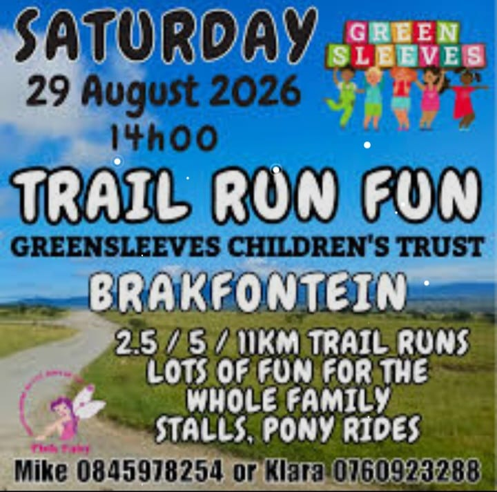
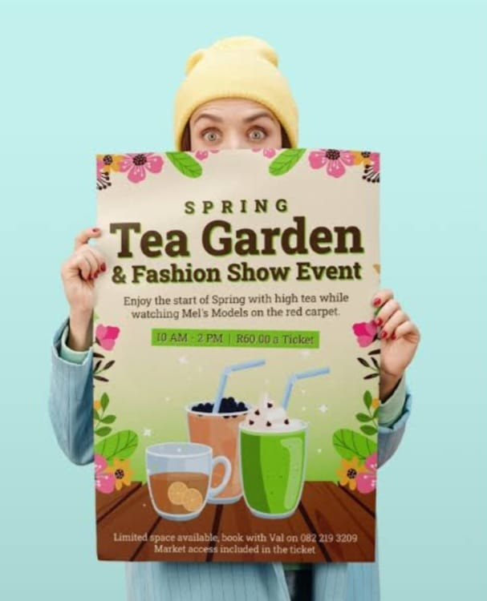
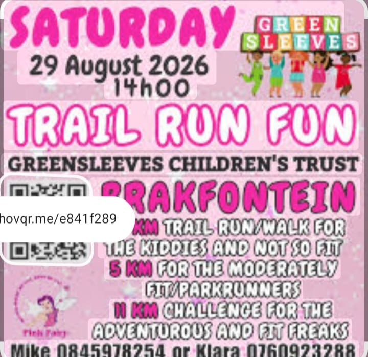
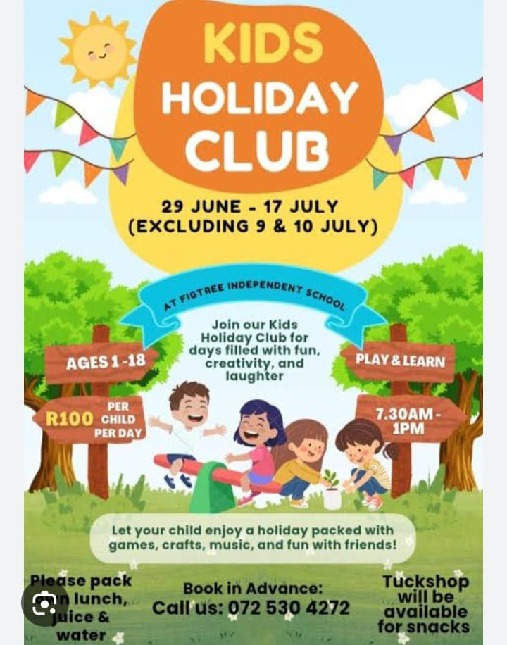

Welcome to Greensleeves Children's Trust

Providing Hope, Love and a Future for Vulnerable Children
Greensleeves Children's Trust is a non-profit place of safety and foster village located in Brakfontein, outside East London in South Africa. We house, feed and educate over 75 vulnerable, abandoned and orphaned children across multiple foster homes without receiving any government funding.
Since the mid-1990s, we have been providing a stable, family-style environment for children who have nowhere else to go. Our foster village operates as a cluster of family homes, each run by dedicated house parents who provide love, care and guidance to the children in their care.
Our Impact at a Glance
| Statistic | Number |
|---|---|
| Children Housed | 75+ |
| Foster Homes | 15 |
| Years Operating | Over 25 Years |
| Government Funding | R0 - Fully Self-Funded |
Upcoming Events
| Event | Details |
|---|---|
 |
Spring Tea Garden and Fashion ShowTime: 10AM - 2PM Tickets: R60.00 per ticket Booking: Contact Val on 082 219 3209 |
 |
Trail Run FunDate: 29 August 2026 Time: 14h00 Location: Brakfontein Contact: Mike 084 597 8254 or Klara 076 092 3288 |
 |
Kids Holiday ClubDate: 29 June - 17 July 2026 Location: FigTree Independent School Ages: 1-18 Booking: 072 530 4272 |
Help Us Raise R100,000

We are currently running a fundraising campaign to raise R100,000 for our children. Your donation can make a real difference in the lives of vulnerable children.
Connect with Us
Stay updated with our latest news, events and stories of impact by following us on our official platforms.